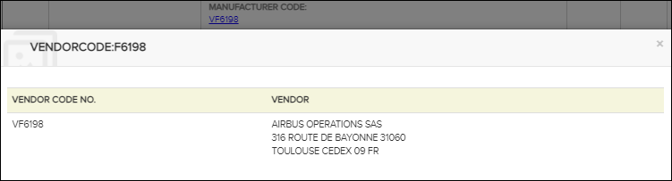

The viewer displays pop-ups as a way to view content within a link by hovering the mouse over a link. The content within the target link displays in a pop-up without closing the content already displayed in the content pane.
References to items in TIR and CIR data modules can occur, for example, in the preliminary requirement section of a procedural data module or in IPD data modules. Such references appear as ordinary blue hyperlinks. When you click on this link type you will see a TIR/CIR dialog.

TIR Dialog Example
As you can see in the illustration above, the dialog displays information for the selected item. The type of information displayed depends on the TIR/CIR type. The dialog can also contain links, for example to Enterprises or figures.

Vendor Dialog Example